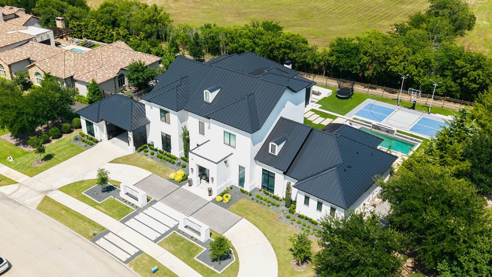

Residential roofing
New roofs and repairs for homes. Hidden damage is cut out and fixed properly.
- Roof replacement
- Roof repair
- Gutter installation

Roofing · Round Rock, TX
Constant updates, punctual crews, spotless clean-up, and insurance handled directly.

Free 20-point inspection, photos of any damage and an itemized estimate. Then updates, punctual crews and a clean site.
Fully licensed in Texas and insured. Financing available.
Services
Residential and commercial roof replacement and repair, storm damage restoration and gutters across the Austin area.
New roofs and repairs for homes. Hidden damage is cut out and fixed properly.
Commercial roof replacement and repair, plus storm damage restoration, starting with a full assessment and plan.

Photos of all damage, a detailed estimate, and we deal with the insurance company directly.

The work


Reviews
4.7221 Google reviews
My new roof is beautiful! Blue Hammer Roofing did a fantastic job. From the initial inspection to installation day, they kept me informed every step of the way. Their communication was incredible, and I always knew exactly what was going on throughout the entire process. Finding out you need a new roof is pretty stressful, so I’m extremely grateful that Blue Hammer made everything easy and seamless.
Amazing company. Dave and Zee have made this a fantastic experience. We hired them for a complete roof installation and gutter installation, along with some necessary roof damage repair. They were punctual, friendly, and offered a great price for the high-quality work. Five stars!
If I could give more than 5 stars, I would. Tim Ellis is the man (attached is his card, call him!). I was really not looking forward to replacing my roof. A lot of contractors came by, but Tim won my trust and made this whole experience incredibly easy. He’s excellent at managing his team and completing the work swiftly and professionally. I never imagined the process could be this smooth.
I was referred to this company by my neighbors and friends. I think from the start their communication was great and walked me through every step of the way. Their team of 11 day if came and did amazing work, very professional, Timely, and their clean up after was pretty impeccable. I was very impressed and Christian and Jerry were great to work with. I highly recommend this company for your roofing needs.

About
Founded in 2008 in Dallas, with offices across Texas. The Round Rock office serves Austin, Georgetown, Cedar Park, Pflugerville and nearby towns.
Project managers keep everyone informed with photos, videos and a group chat.
Call or stop by
551 S I-35 Frontage Rd Ste 103, Round Rock, TX 78664 Directions
Free inspections come to you across Austin, Round Rock, Pflugerville, Georgetown, Cedar Park, Leander and more.